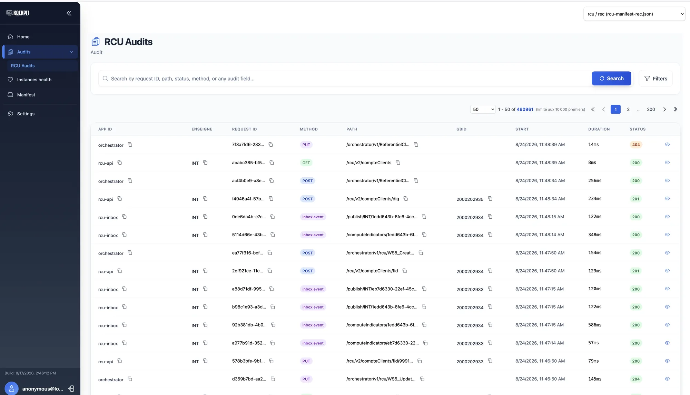
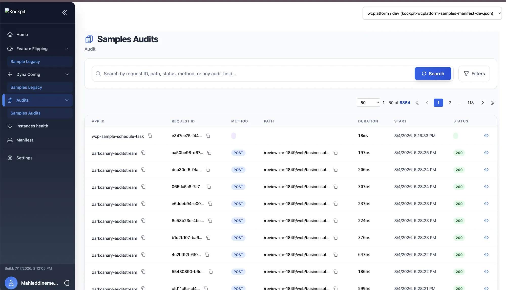
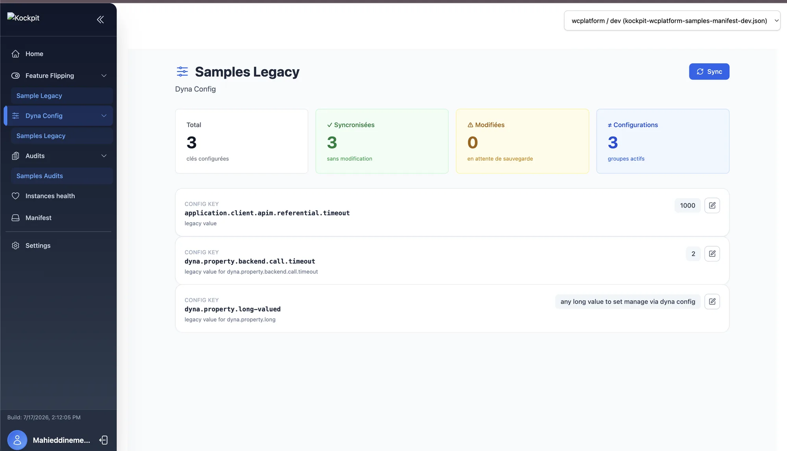
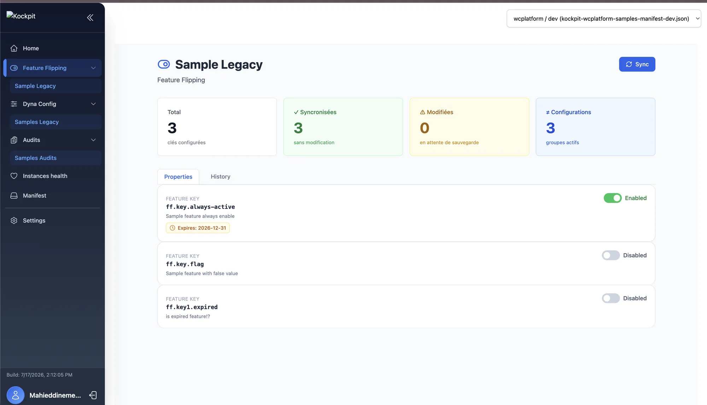

Kockpit is an engineering platform for Spring Boot systems: it audits every call in and out, flips features and configuration without a redeploy, and gives you one console to watch it all happen — backed by OpenSearch and shippable to your own filesystem, Azure, or AWS.
Starting with kockpit 2.0.0, the platform targets Spring Boot 4 only (Spring Framework 7,
Jakarta EE 11, Spring AI 2.x) and requires Java 21 minimum for both build and runtime — including
projects consuming kockpit-rules-maven-plugin. Teams still on Spring Boot 3.x should stay
on the kockpit 1.x line.
Kockpit isn't a monolith bolted onto your services — it's a composition of focused modules that cover auditing, rules, backends, and the web console that ties them together.
Captures input and output calls, HTTP exchanges, and key-value events for any API, batch job, or application you point it at, then indexes them into OpenSearch for search.
A rule engine with its own DSL: rule definitions, an executor, a registry, and a Maven plugin that generates the rules DSL straight from a JSON input file.
Pluggable backend implementations for where audit data actually lives: local filesystem, Azure storage and Event Hub, or AWS S3 and Kinesis.
The web console for the platform — a single pane of glass over audits, feature flags, dynamic configuration, and queue management, backed by the Kockpit backend API.
An MCP server built on Spring AI that exposes audit search to AI agents, so assistants can query what your systems have been doing without a custom integration.
Shared core libraries plus runnable sample applications, so every module ships with a working example of how to wire it into a real project.
Everything below is reachable from the Kockpit backend API and surfaced in the web console.
Every input/output call, HTTP exchange, or key-value event your services emit, indexed in OpenSearch and searchable from one place — across APIs and batch jobs alike.
Turn features on and off for running services with a hot change — no build, no redeploy, no restart window to coordinate.
Push configuration changes to live applications the same way — hot, at runtime, without shipping a new artifact.
Inspect and manage SQS queues on AWS directly from the console, alongside the rest of your operational view.
The Kockpit web console, in the wild — audit search across two different platforms, dynamic configuration, and feature flipping, all reading from the same manifest-driven setup.

Full-text and field search across audit events — request ID, path, method, status, or any custom field — with pagination built for datasets in the hundreds of thousands of records.

The same audit view scoped to a different manifest — each team or platform gets its own manifest file, browsable from the same console without standing up a separate deployment.

Dynamic configuration keys with live sync status — configured, synced, or pending a save — editable inline without shipping a new build.

Feature keys with on/off toggles and optional expiry dates, plus a history tab for tracking who changed what and when.
The backend application ships in three flavors, depending on where your audit data and notifications should live. All three sit in front of the same OpenSearch-backed search engine.
Reads audits off a Kafka broker and indexes them into an OpenSearch cluster as they arrive.
Same role, sourced from Kinesis for teams already standardized on the AWS streaming stack.
Pick the path that matches your environment. Every image is published to ghcr.io/mahieddine-ichir/kockpit.
# run the Kockpit web console
docker run ghcr.io/mahieddine-ichir/kockpit/kockpit-console:latestdocker run -p 8080:8080 \
-e OPENSEARCH_ENDPOINTS=http://opensearch:9200 \
-e kockpit.sdk.manifest.filesystem.path=/data/manifests \
-e kockpit.sdk.filesystem.local_directory=/data \
-v ~/kockpit/data:/data \
ghcr.io/mahieddine-ichir/kockpit/kockpit-backend-application-filesystemdocker run -p 8080:8080 \
-e kockpit.sdk.aws.region=eu-west-1 \
-e kockpit.service.aws.region=eu-west-1 \
-e OPENSEARCH_ENDPOINTS=http://opensearch:9200 \
ghcr.io/mahieddine-ichir/kockpit/kockpit-backend-application-aws# starter manifest — adapt to your cluster conventions
apiVersion: apps/v1
kind: Deployment
metadata:
name: kockpit-backend
spec:
replicas: 1
selector:
matchLabels: { app: kockpit-backend }
template:
metadata:
labels: { app: kockpit-backend }
spec:
containers:
- name: kockpit-backend
image: ghcr.io/mahieddine-ichir/kockpit/kockpit-backend-application-filesystem
ports: [{ containerPort: 8080 }]
env:
- { name: OPENSEARCH_ENDPOINTS, value: "http://opensearch:9200" }The full kockpit suite — audit, rules, backends, console, and samples — under the Apache-2.0 license.
github.com/mahieddine-ichir/kockpitModule composition, configuration properties, and environment variables for every package.
README.md · replace with your docs siteThe people building kockpit, and the commit history behind each module.
contributors · replace with your team page